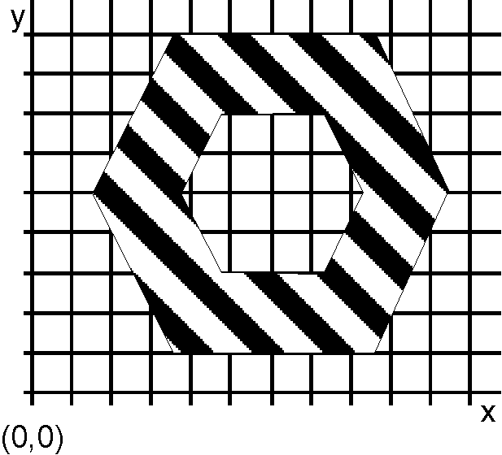

Applications can create, outline, and fill areas and can create custom-fill patterns from bit maps or font symbols. Some graphics functions are not valid within an area definition. For example, you cannot include marker, image, or character-string primitives in an area definition. The following figure is an example of an area.

An Area
This area comprises two hexagons, one completely enclosed by the other. The area is filled with the current area-fill pattern.